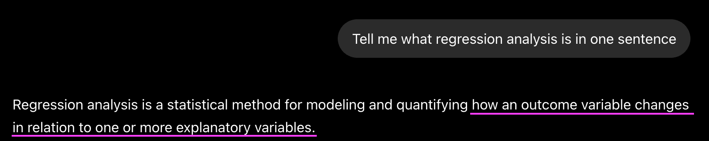
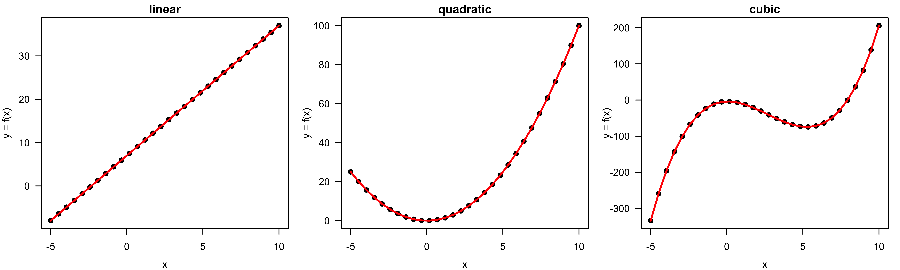
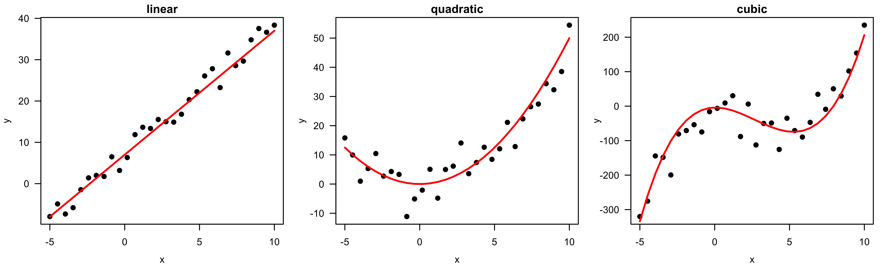

Overview of Regression 📖
MATH 4780/MSSC 5780 Regression Analysis
What is Regression
- All right. Let’s start talking a little about regression.
- Today I want to give you a brief overview of regression before we go into the details of it.
- I guess the first question one could ask is what is regression.
- And it’s not that hard to answer this question.
- Nowadays, if we don’t know something, we google it.
- This is just the google page.
- Here shows the explanation of regression analysis in wikepedia.
This is what my ChatGPT says…
Regression is a statistical technique for investigating and modeling the relationships between variables.
- So in one sentence, Regression analysis is a statistical technique for investigating and modeling the relationships between variables.
- Regression is a tool for exploring the relationships between variables.
- If you just analyze one particular variable in a data set, you won’t need regression.
- If you analyze two or more variables separately, one at a time, you won’t need regression too.
- If you care about the relationships between variables, how one variable affects the other, then you need regression analysis.
Relationship as Functions
- Represent relationships between variables using functions \(y = f(x)\).
- Plug in the inputs and receive the output.
- \(y = f(x) = 3x + 7\) is a function with input \(x\) and output \(y\).
- If \(x = 5\), \(y = 3 \times 5 + 7 = 22\).

- In mathematics, how do we describe a Relationship Between Variables? We use a function. Right.
- The function \(y = f(x)\) gives us the relationship between an output \(Y\) and one or more inputs \(x\).
- You plug in the values of inputs and receive back the output value.
- For example, the formula \(y = f(x) = 3x + 7\) is a function with input \(x\) and output \(y\). If \(x = 5\), \(y = 3 \times 5 + 7 = 22\).
- Because this is a linear function, we know that x and y are linearly related.
- With a value of \(x\), I can give you 100% correct value of \(y\), which is right on this straight line. right. In other words, their relationship is 100% deterministic.
Different Relationships

. . .
Can you come up with any real-world examples describing relationships between variables deterministically?
- The relationship between x and y can be more than linear.
- The relationship can be also quadratic, cubic or any other possible relationship.
Different Relationships


- Here I give your two examples. The first example is the conversion of F and C degrees. Their relationship is linear and F = 32 + 1.8 C.
- So you give me a C degree, I can tell you its corresponding F degree fro sure. Right.
- The second example comes from physics. the displacement of an object is a quadratic function of time.
- So here s(t) = v0 * t + 0.5 * a * t^2. v0 is the initial velocity, and a is acceleration, and t is time.
- Again the relationship between displacement and time is 100% deterministic.
- A value of time corresponds to an unique value of displacement given v0 and a.
Functions - upsides and downsides
- Models can sometimes reveal patterns that are not evident in a graph of the data. This is a great advantage of modeling over simple visual inspection of data.
- There is a real risk, however, that a model is imposing structure that is not really there on the scatter of data, just as people imagine animal shapes in the stars. A skeptical approach is always warranted.
Relationship between Variables is Not Perfect

. . .
Can you provide some real examples that the variables are related each other, but not perfectly related?
- But unfortunately, in reality, most relationships between variables we are interested are not Perfect.
- In fact, there is almost no perfect relationship between two variables because everything in the world is connected each other. And so any two variables are affected by any other variables.
- For example, the displacement of an object is also affected by airflow and humidity, which is not considered in the formula.
- Even we the two variables are perfectly related, there are always some measurement errors or noises when we are recording and collecting their data. right. For example, there may be some measurement errors when we measure the displacement of an object for any given time, right? So their quadratic relationship is there, but the data we collect are not exactly on the quadratic curve.
- So that’s why the Relationship between variables always involves some uncertainty.
Relationship between Variables is Not Perfect
💵 In general, one with more years of education earns more.
💵 Any two with the same years of education may have different annual income.


- Here I give you a simple example: the relationship between income and years of education.
- 💵 In general, one with more years of education earns more.
- 💵 Any two with the same years of education may have different annual income.
- Because your income level depends on so many other factors, not just years of education.
- So when you plot the scatter plot of the two variables, you will find that there is some trend, but the data are sort of scattered or jittered or variated around some function that describes the relationship between income the years of education.
- Red dots are observed values or the years of education and income pairs.
Variation around the Function/Model
What are the unexplained variation coming from?
. . .
-
Other factors accounting for parts of variability of income.
- Adding more explanatory variables to a model can reduce the variation size around the model.
- Pure measurement error.
- Just that randomness plays a big role. 🤔

. . .
What other factors (variables) may affect a person’s income?
. . .
your income = f(years of education, major, GPA, college, parent's income, ...)
- And the data Variation around the Function, or in general the regression model is just as important as the model, if not more!
- Basically, what statistics does is explain variation in the context of what remains unexplained.
- The scatter plot suggests that there might be other factors that account for large parts of variability.
- If that is the case, adding more explanatory variables ( \(X\)s ) to a model can sometimes usefully reduce the size of the scatter around the model.
- Perhaps just that randomness plays a big role.
Regression Model
-
\(Y\): response, outcome, label, dependent variable, e.g.,
income -
\(X\): predictor, covariate, feature, regressor, explanatory/ independent variable, e.g.,
years of education, which is known and fixed.
. . .
- Explain the relationship between \(X\) and \(Y\) and make predictions through a model \[Y = f(X) + \epsilon\]
-
\(\epsilon\): irreducible random error
- independent of \(X\)
- mean zero with some variance.
- \(f(\cdot)\): fixed but unknown function describing the relationship between \(X\) and the mean of \(Y\).
. . .
In Intro Stats, what is the form of \(f\) and what assumptions you made on the random error \(\epsilon\) ?
. . .
- \(f(X) = \beta_0 + \beta_1X\) with unknown parameters \(\beta_0\) and \(\beta_1\).
- \(\epsilon \sim N(0, \sigma^2)\).
- OK. Now after collecting the data of the variables we are interested, we know their relationship, most of the time, is not perfect, and stochastic in some way and in some sense.
- And how do we model such stochastic relationship? Well the answer is a regression model.
- Suppose we are interested in the relationship between two variables, call \(X\) and \(Y\). In particular, we like to know how changes of \(X\) affect value of \(Y\), or we want to use \(X\) to predict \(Y\).
- In this sense, \(Y\) is called response, outcome, label, dependent variable, e.g.,
income -
\(X\) is called predictor, covariate, feature, regressor, explanatory or independent variable, e.g.,
years of education, which is known and fixed. - Explain the relationship between \(X\) and \(Y\) and make predictions through a model \(Y = f(X) + \epsilon\). This is a very general regression model we can built to learn the relationship b/w x and y.
- \(f(\cdot)\) is fixed but unknown and describes the true relationship between \(X\) and \(Y\).
- \(\epsilon\) is a irreducible random error which is assumed to be independent of \(X\) and has mean zero with some variance.
- \(\epsilon\) is used to represent those measurement errors or the variation that cannot be explained or captured by the predictor X.
- Intro Stats:
- \(f(X) = \beta_0 + \beta_1X\) with unknown parameters \(\beta_0\) and \(\beta_1\).
- \(\epsilon \sim N(0, \sigma^2)\).
- \(X\) and \(Y\) are assumed to be linearly related, which may not be correct.
- Next week, we will learn simple linear regression from the scratch and in much more detail. Here I just give you an overview.
\(Y_i = \beta_0 + \beta_1 X_i + \epsilon_i, \qquad \epsilon_i \sim N(0, \sigma^2)\)

\(Y_i = \beta_0 + \beta_1 X_i + \epsilon_i, \qquad \epsilon_i \sim N(0, \sigma^2)\)

\(Y_i = \beta_0 + \beta_1 X_i + \epsilon_i, \qquad \epsilon_i \sim N(0, \sigma^2)\)

True Unknown Function \(f\) of the Model \(Y = f(X) + \epsilon\)
-
Blue curve: true underlying relationship between (the mean)
incomeandyears of education. - Black lines: error associated with each observation


- Let’s go back to the income-education example. Red dots are observed values or the years of education and income pairs. Suppose we like to use a regression model \(y = f(x) + \epsilon\) to describe the relationship between income and education.
- And the *Blue** curve on the right shows the true underlying relationship between income and years of education, which is the function \(f\) in our regression model.
- And each Black vertical line indicates an error associated with each observation.
- So again, each red dot or observation is the value of the function \(f(x)\) plus some random error with its magnitude shown in a black vertical line.
- Again, in regression, we assume years of education is fixed. It is income level that varies around the function \(f\).
. . .
Big problem: \(f(x)\) is unknown and needs to be estimated.
- And a big problem is, in reality, we don’t know this true function \(f\). And we need to estimate it.
- estimating this unknown \(f\) is a main job of regression analysis. We are trying to uncover the underlying true process or function \(f\), given the data that are noisy or with some unknown random errors.
Why Estimate \(f\)? Prediction for \(Y\)
- Prediction: Inputs \(X\) are available, but the output \(Y\) cannot be easily obtained. We predict \(Y\) using \[ \hat{Y} = \hat{f}(X), \] where \(\hat{f}\) is our estimate of \(f\), and \(\hat{Y}\) represents the resulting prediction for \(Y\).
- Now we know our goal is to estimate the unknown regression function \(f\). But why do we need that? Any benefits we can have after estimating \(f\)?
- Well, the two main benefits of doing regression are
- first, we are able to predict y given a value of x
- the second benefit is, we learn how x affects y, which may be our research interest.
- Let’s discuss prediction first.
- Regression can be a great tool for prediction, especially when inputs \(X\) are available, but the output \(Y\) cannot be easily obtained.
- For example, we usually know people’s years of education, but we rarely know their income level, right? because income is a private and personal information.
- After we estimate \(f\), we can use the estimate of \(f\) to predict \(y\),
- So we predict \(Y\) using the relationship between X and Y that we learn from our data that
. . .
In Intro Stats, what is our estimated regression function \(\hat{f}\)?
. . .
- \(\hat{Y} = \hat{\beta}_0 + \hat{\beta}_1X\).
. . .
- \(\hat{f}\) is often treated as a black box.

- When the goal is prediction, \(\hat{f}\) is often treated as a black box. Basically we don’t care much about how \(f\) looks like, or whether the shape \(f\) is meaningful. All we want is that predicted values are as close as the true response values.
Why Estimate \(f\)? Inference for \(f\)
- Inference: Understand how \(Y\) is affected by \(X\).
- \(\hat{f}\) cannot be treated as a black box. We want to know the exact form of \(f\).
. . .
We are interested in
-
Which covariates are associated with the response?
👉 Doage,education level,gender, etc affectsalary?
. . .
-
What is the relationship between the response and each covariate?
👉 How muchsalaryincreases/decreases asageincreases one unit?
. . .
-
Can the relationship be adequately summarized using any equation?
👉 The relationship betweensalaryandageis linear, quadratic or more complicated?
- Another benefit of estimating y is that we can do inference for the regression function \(f\).
- We estimate \(f\) so that we understand how \(Y\) is affected as \(X\) changes.
- When the goal is inference, \(\hat{f}\) cannot be treated as a black box.
- We want to know its exact form of \(f\).
- When doing inference, we are interested in:
-
Which covariates are associated with the response? e.g. Do
age,education level,gender, etc affectsalary? -
What is the relationship between the response and each covariate? e.g. How much
salaryincreases/decreases asageincreases one unit? -
Can the relationship between \(Y\) and each covariate be adequately summarized using a linear equation, or is the relationship more complicated? e.g. The relationship between
salaryandageis linear, quadratic or more complicated?
-
Which covariates are associated with the response? e.g. Do
All those questions may be your research questions, and these can be answered by regression analysis.
How to Estimate \(f\)?
- Observations \(\{(x_1, y_1), (x_2, y_2), \dots, (x_n,y_n)\}\): training data to train or teach our model to learn \(f\).
- Use test data to test or evaluate how well the model makes inference or prediction.
. . .
- Models are characterized as either parametric or nonparametric.
- We learn why we estimate \(f\). But How do we Estimate \(f\)?
- Well, that’s is why we have this course. we will learn how to estimate f starting next week.
- The basic idea is that We have observed values \(\{(x_1, y_1), (x_2, y_2), \dots, (x_n,y_n)\}\) called training data in machine learning that is used to train or teach our model to learn \(f\).
. . .
-
Parametric methods involve a two-step model-based approach:
- 1️⃣ Make an assumption about the functional form, or shape of \(f\), e.g. linear regression \[ f(X) = \beta_0 + \beta_1X_1 \]
- 2️⃣ Use the training data to fit or train the model, e.g., estimate the parameters \(\beta_0, \beta_1\) using (ordinary) least squares.
- Generally, regression models can be characterized as either parametric or non-parametric.
- And parametric methods involve a two-step model-based approach:
- [1] First we make an assumption about the functional form, or shape of \(f\). For example, we can assume the function form or the relationship between y and predictors is linear, so the function \(f(X)\) is a linear function $f(X) = _0 + _1X_1 + _2X_2 + , _pX_p $.
- [2] And then we use the training data to fit or train the model. For example, estimate the parameters \(\beta_0, \beta_1, \beta_2 \dots, \beta_p\) using (ordinary) least squares.
- Nonparametric methods, on the other hand, do not make assumptions about the functional form of \(f\).
- They basically seek an estimate of \(f\) that gets as close to the data points as possible without being too rough or wiggly. So the idea is, we try to make the function looks like data scatter pattern, and the function is a smoothed version of the data.
. . .
-
Nonparametric methods do not make assumptions about the shape of \(f\).
- Seek an estimate of \(f\) that gets close to the data points without being too rough or wiggly.
Parametric vs. Nonparametric Models
Parametric (Linear regression)

Nonparametric (LOESS)

- So here see the difference between parametric and nonparameteric models.
- For the parameteric model, we actually use linear regression, assuming the relationship between Income and Years of Education is linear.
- For the nonparameteric model, we learning the regression function \(f\) from the data without putting strict constraints on the shape of \(f\).
- Remember that the fitted function here is an estimated one, not the true one.
- Which one is better than the other? We’ll learn how to compare different models later.
Parametric vs. Nonparametric Models
- Parametric: Assumptions on \(f\) with unknown parameters.
- Nonparametric: No assumptions on \(f\) (may have no closed form).

- In sum, regression can be either parametric or non-parametric.
- Parametric models put some assumptions on \(f\) with unknown parameters.
- NonParametric models have no assumptions on the shape of \(f\).
Linear vs. Nonlinear Models
-
Linear Regression: \(Y\) is linear in unknown parameters, NOT predictors.
- \(Y = \beta_0 + \beta_1X + \epsilon\)
- \(Y = \beta_0 + \beta_1X + \beta_2X^2 + \epsilon\)
- \(Y = \beta_0 + \beta_1X + \beta_2X^2 + \beta_3\sqrt{X} + \epsilon\)
- In fact, Parametric models can be either a linear model or a nonlinear model
- When we say linear regression, it means \(Y\) is linear in unknown parameters, NOT predictors.
- Note that for all three cases here, y is linear in \(\beta\), and so they all belong to linear regression.
- A nonlinear relationship between \(X\) and \(Y\) can be modeled as a linear regression.
. . .
- A nonlinear relationship between \(X\) and \(Y\) can be modeled using a linear regression.
. . .
-
Nonlinear Regression: \(Y\) is NOT linear in unknown parameters.
- \(Y = \frac{\beta_0}{1 + e ^{-\beta_1X}} + \epsilon\)
- \(Y = \beta_0e ^{-\beta_1X}\cdot\epsilon\)
- When we say Nonlinear Regression, it means that \(Y\) is NOT linear in unknown parameters.
. . .
👉 Some nonlinear models can be transformed to an equivalent linear model.
- Actually Some nonlinear models can be transformed to an equivalent linear model.
- So we know linear models can describe nonlinear relationships between variables, and some nonlinear models can be transformed into linear models, and linear regression is much easier to deal with.
- That’s why linear regression or linear model in general plays an important role in statistical modeling.
- We love to start with a linear model when doing data analysis.
- If we can get our job done using a simple model, why use a complex one.
. . .
Which nonlinear model above can be transformed into a linear model?
Linear vs. Nonlinear Models

- OK. So Regression can be divided into Linear and Nonlinear Regression.
Linear (Gaussian) Model vs. Generalized (non-Gaussian) Linear Model